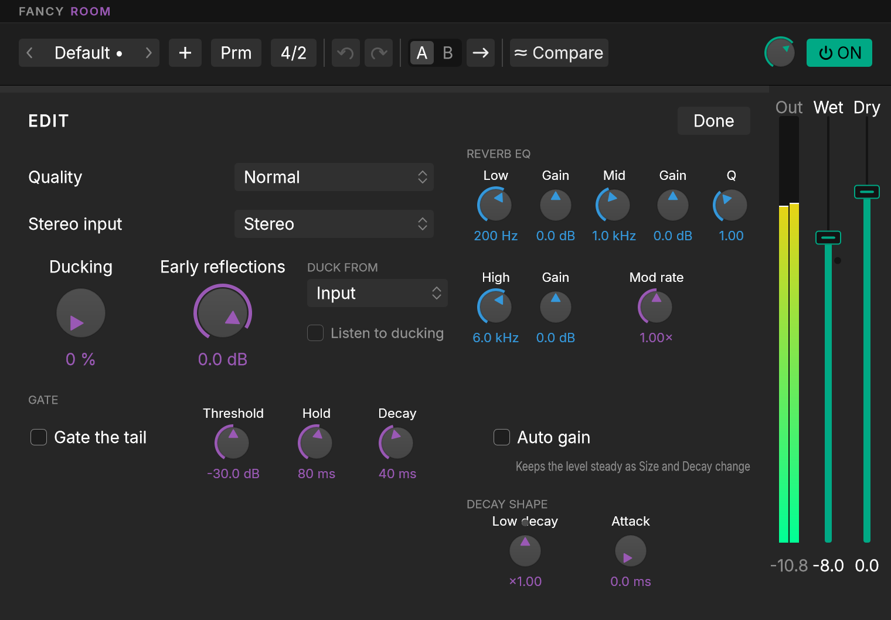

docs/room.md, Phase 4 Wave 3: shimmer, Decisions 1 to 3 A (user, 26 November 2026). New things in dashed yellow, on the plugin's real screenshot (1x coordinates).
1 · A (recommended): a SHIMMER group in the EDIT drawer's empty corner, under the Gate row; the window stays 760 x 529
Shimmer (0 to 100 %, 0 by default) is a small knob like Low decay's, in Ducking's column, with Interval (Octave up, Fifth up, Fourth up, Octave and fifth up, Two octaves up, Octave down) beside it, the same list as Verb's. The group sits level with DECAY SHAPE, so the drawer's bottom row reads as two groups.

SHIMMER
Interval
Octave up
Feeds the tail back an interval higher on each pass. It always dies away.
At 0 % the output is today's, to the bit, and Interval does nothing. No existing control moves or changes size; the main window doesn't change. The tooltip reads "Shimmer: feeds the tail back into the room through a pitch shifter, so each pass comes back an interval higher. 0 % is off; Freeze holds it."
2 · A at 50 %, Interval open
The six intervals, Octave up ticked. With no room below, the list opens upwards.
SHIMMER
Interval
Octave up
Feeds the tail back an interval higher on each pass. It always dies away.
3 · B: beside the reverb EQ, under DECAY SHAPE; the window grows 80 px taller (760 x 609)
The note's literal place: the right-hand column, below DECAY SHAPE. It has no room there today, so the drawer and the window grow 80 px (the minimum too); the meters and faders lengthen and the main page's cards get the height evenly, as in Wave 2.

SHIMMER
Interval
Octave up
Costs height on the main page too, for one row that only EDIT shows, and leaves the bottom-left corner empty. The note goes in the tooltip only.